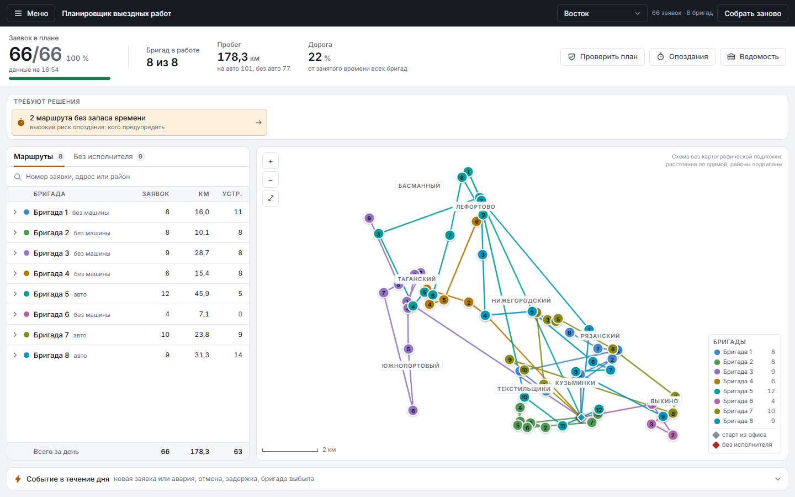
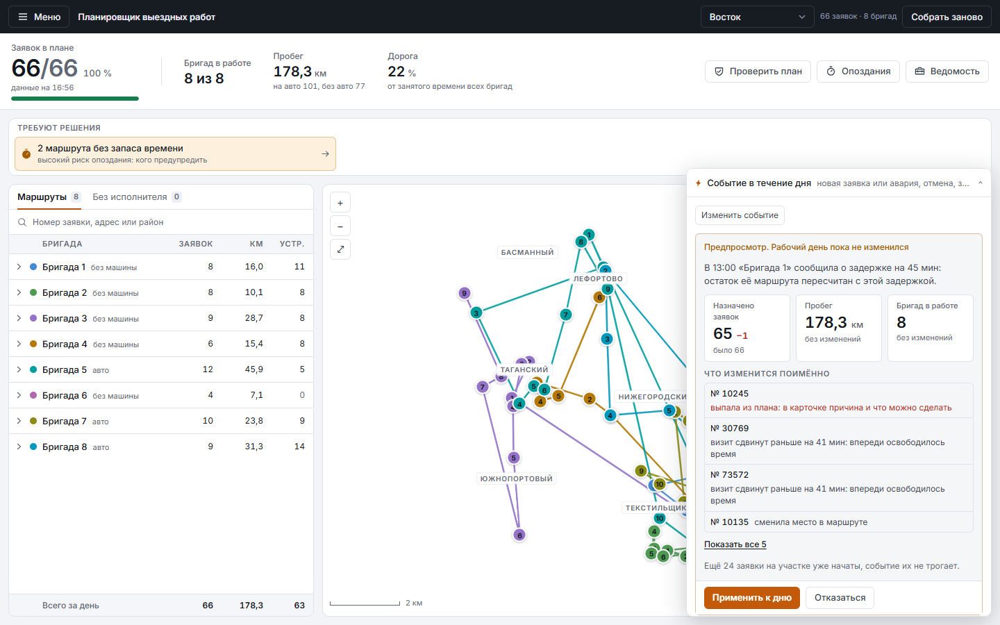
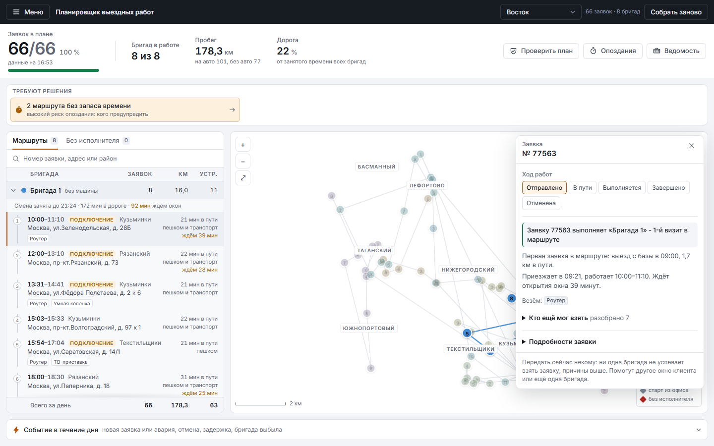
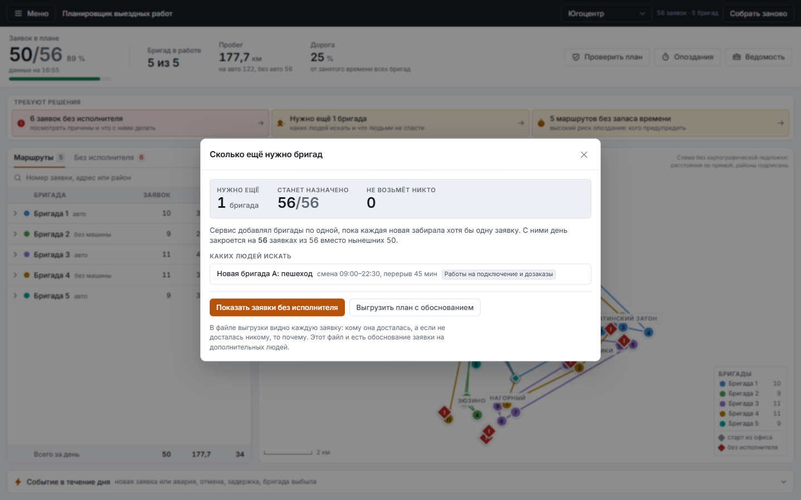

01 / 14
Кейс «Билайн Бизнес» · планирование маршрутов выездных инженеров
Планировщик
выездных работ
Помощник диспетчера: раздаёт заявки, строит маршруты,
перестраивает день после события и объясняет каждое решение словами.
Работаем на обезличенных выгрузках организаторов за 17 августа. Заявки
читаются как есть; исполнителей в выгрузке нет, их состав подобран под день.
02 / 14
Задача
Утро диспетчера
Сто заявок, дюжина бригад. У каждой бригады свои навыки, свой транспорт
и своя смена. У каждой заявки адрес, длительность и двухчасовое окно, в которое
надо успеть начать. К обеду приходит авария, одну заявку отменяют, одна бригада
выходит из строя. Новый план нужен за минуты.
Навык
Аварийную заявку нельзя отдать бригаде, которая аварии не делает.
Время
Начало работ обязано попасть в окно, а вся работа с дорогой - в смену.
Ресурс
Бухту кабеля пешком не принесёшь: часть заявок требует машины.
Что мы делаем. Не промышленную FSM-платформу, а прототип,
который предлагает выполнимый план и простыми словами объясняет, почему он такой.
03 / 14
Данные
Что дали и чего в данных нет
Есть в выгрузках
- Номер, тип работ и категория заявки
- Адрес и район
- Границы временного окна
- Признак гигабитного подключения
- Адрес офиса участка: отсюда бригады выезжают утром
Нет и пришлось достроить
- Длительность работ
- Сами исполнители: сколько их, навыки, транспорт
- Границы смены
- Оборудование, которое везут клиенту
Постановщик: число исполнителей заранее не задано, их можно
добавлять, а правильный ответ на непомещающиеся заявки - «нужно ещё N бригад».
Контрольное распределение он назвал ориентиром, а не мерилом качества,
поэтому в расчёт оно не идёт и как аргумент не используется.
04 / 14
Допущения
Мы ничего не прячем
Всё достроенное собрано в коде в одном месте, показано в интерфейсе в
окне «Как считаем» и меняется одной строкой. Текст окна собирается из тех же
констант, по которым считает планировщик.
| Чего нет в данных | Откуда взяли |
|---|
| Навык заявки | Из категории работ - соответствие справочнику ТЗ получилось один в один |
| Длительность работ | Таблица нормативов заказчика: подключение 90 мин, авария 100, ремонт 50, дозаказ 40; дорога внутри норматива заменяется рассчитанной |
| Число бригад | Расчётный минимум по объёму работ и по самому плотному часу: Восток 8, Юго-восток 9, Югоцентр 5 |
| Навыки бригады | Доли профилей, от 1 до 3 навыков по ТЗ; универсалов меньшинство |
| Транспорт | Машины тем, у кого допуск к заявкам, где машина обязательна, и одной аварийной бригаде; остальные по долям: общественный транспорт 45%, пешком 30%, машина 25% |
| Старт и смена | Офис участка; одна смена на участок по окнам заявок, не короче восьми часов, обед 45 минут |
05 / 14
Алгоритм
Что оптимизируем
Задача маршрутизации бригад с временными окнами, навыками и разнородным
транспортом. Решаем через OR-Tools: своя матрица времени на каждый тип транспорта,
окна и смены как временнóе измерение, снятие заявки как штрафуемая альтернатива.
- 01Назначить как можно больше заявок.
Снять срочную стоит вчетверо дороже обычной.
- 02Задействовать как можно меньше людей.
Первая обязательная метрика ТЗ.
- 03Проехать как можно меньше километров.
Вторая обязательная метрика.
Веса заданы явно: вывод ещё одного человека на смену мы оценили
в 120 км пробега. Персонал дороже бензина, но не любой ценой - и эту границу
видно в коде, а не только в словах.
06 / 14
Честность сравнения
Три варианта, а не два
Базовый по ТЗ
Реализован дословно: заявки по порядку поступления, первому подходящему
исполнителю, объезд в порядке назначения.
Быстрый расчёт добавлен нами
Сортировка от срочных и ранних окон, вставка в позицию с минимальным
приростом пробега. Добавлена намеренно.
Оптимизатор OR-Tools
Полная модель со всеми ограничениями. Поиск останавливается по числу найденных решений, а не по секундам: тот же день даёт тот же план.
Базовый вариант из ТЗ намеренно наивен, и сравнивать оптимизатор
только с ним было бы нечестно. Поэтому мы сами написали себе сильного
соперника - и всё равно выигрываем у него.
07 / 14
Результаты
Три района, один рабочий день
| Вариант | Назначено | Людей |
Пробег, км | Км на заявку |
|---|
| Восток · 66 заявок · 8 бригад |
| Базовый по ТЗ | 18 | 8 | 91,8 | 5,10 |
| Быстрый расчёт | 61 | 8 | 248,6 | 4,08 |
| Оптимизатор | 66 | 8 | 178,3 | 2,70 |
| Юго-восток · 83 заявки · 9 бригад |
| Базовый по ТЗ | 35 | 9 | 641,5 | 18,33 |
| Быстрый расчёт | 66 | 9 | 563,8 | 8,54 |
| Оптимизатор | 71 | 9 | 555,1 | 7,82 |
| Югоцентр · 56 заявок · 5 бригад |
| Базовый по ТЗ | 13 | 5 | 77,3 | 5,94 |
| Быстрый расчёт | 47 | 5 | 260,9 | 5,55 |
| Оптимизатор | 50 | 5 | 177,7 | 3,55 |
На Востоке оптимизатор закрывает все 66 заявок
теми же восемью бригадами, которым базовый вариант раздаёт 18. На всех трёх
участках он обходит и быстрый расчёт: больше заявок и меньше километров на каждую.
Суммарный пробег между вариантами напрямую несопоставим: план,
раздавший вдвое меньше заявок, «экономит» километры просто потому, что многого
не делает. Сопоставима удельная величина - последний столбец.
08 / 14
Против базового варианта из ТЗ
Сколько заявок закрыто за день
Базовый вариант из ТЗ
Наш оптимизатор
Базовый вариант задан в ТЗ дословно: заявки по порядку
поступления первому подходящему исполнителю, порядок объезда совпадает с порядком
назначения. Так он и реализован. За день он закрывает 66 заявок из 205, оптимизатор -
187. Это и есть ответ на вопрос, зачем здесь планировщик: задача нетривиальна, честное
последовательное распределение берёт около трети работы.
09 / 14
Объяснимость
Почему эта заявка у этой бригады
Мы не пересказываем код. Для каждой заявки
планировщик реально пробует вставить её в маршрут каждой бригады
и показывает, что именно отсекло остальных и во сколько километров обошёлся бы
любой другой вариант.
Для неназначенной заявки причина называется словами:
«все подходящие исполнители в окне 20:00–22:00 уже заняты», а не код ошибки.
Карточка аварии 97886, Восток
Заявку выполняет «Бригада 7», 7-й визит
в маршруте. Едет от предыдущей заявки 93086 (Рязанский): 3,8 км, 11 мин.
Приезжает в 14:45, работает 16:00–17:20.
Остальные: 5
без навыка «Аварийные работы», 1 не встаёт в свой маршрут.
Могла бы взять «Бригада 6», но её маршрут вырос бы на 2,2 км.
10 / 14
Перепланирование
Событие в середине дня
Все три события из ТЗ и четвёртое сверх него - бригада задерживается.
Прошлое не переписываем: всё, к чему бригады уже приступили,
заморожено, заново планируется только остаток дня.
| Режим | Что делает | Визитов тронуто | Пробег |
|---|
| Минимальная правка | Встраивает изменение, не трогая остальные назначения | 7 | 178,1 км |
| Полная переоптимизация | Пересобирает весь остаток дня | 14 | 181,7 км |
Восток, бригада задержалась на 45 минут в 13:00. Минимальная правка
сдвигает шесть визитов и теряет одну заявку; полная переоптимизация трогает вдвое
больше визитов и проезжает больше; полная пересборка ограничена минутой. Обе
цены видны в предпросмотре до применения, выбор за диспетчером. Обычная
новая заявка встаёт только в свободное окно; авария может сдвинуть чужие визиты,
чтобы бригада приехала за два часа.
11 / 14
Прогноз опозданий
Где план порвётся первым
План по нормативам всегда выглядит выполнимым. В реальном дне работы
затягиваются. Считаем запас прочности прямым пересчётом маршрута: при какой задержке
начало работ перестаёт попадать в окно.
0 мин
запас у самого хрупкого маршрута на Юго-востоке: он сорвётся от первой же задержки
42 визита
с высоким риском: запас меньше 20 минут
37 из 71
заявки под угрозой, если каждая работа затянется всего на 10 минут
Никаких вероятностных моделей: только «при какой задержке правило ТЗ
перестаёт выполняться». Цифру можно проверить руками - и диспетчер видит слабое
место заранее, а не по факту срыва.
12 / 14
Проверка
А ограничения точно соблюдаются?
Этот вопрос эксперты задают первым. У нас на него машинный ответ:
отдельный модуль пересчитывает готовый план с нуля, ничего не зная о том,
как он был построен.
Три района × три стратегии, плюс четыре события перепланирования
в обоих режимах. Сверх этого - 908 проверок инвариантов на 25 вырожденных наборах
и 80 кривых обращений к API. Проверка встроена и в интерфейс кнопкой, и в скрипты,
которые падают с ошибкой, если найдут хоть одно нарушение.
Аудит окупился сразу. Он поймал, что сервис после события
пересобирал список заявок мимо результата перепланирования: план
переставал сходиться с данными, на которых его строили.
13 / 14
Как это выглядит
Рабочий день диспетчера на четырёх экранах

План на день. Слева маршруты бригад, справа карта, сверху очередь того, что требует решения человека.

Событие в середине дня. Предпросмотр до применения: что станет с заявками и пробегом и какие визиты поедут.

Почему эта бригада. По каждой заявке видно, кто ещё мог её взять и почему не взял.

Сколько людей не хватает. Не только «сколько», но и каких: транспорт, навыки, часы смены.
Снимки сделаны автоматически: сценарий проходит экран как человек и
замеряет вёрстку на четырёх ширинах. Прогон валится, если состояние не собралось,
поэтому картинка не может показывать не то, что подписано.
14 / 14
Границы
Чего здесь нет - и куда это растёт
Честные ограничения прототипа
- Расстояния оцениваются по прямой с коэффициентом, без дорожной сети и пробок
- Длительности работ - норматив, а не факт: на проде нужна калибровка по истории нарядов
- Состав бригад подобран по долям, а не взят из штатного расписания: настоящий состав загружается файлом
- Оптимум не доказывается: поиск со счётным пределом
Куда развивать
- Реальная матрица расстояний и пробки по времени суток
- Калибровка нормативов по закрытым нарядам
- Одновременная обработка нескольких событий, а не цепочкой по одному
- Мультидневное планирование и перенос заявок на завтра
Хороший результат - это не самая сложная архитектура,
а завершённый прототип, который уверенно решает заявленный сценарий.
Запуск одной командой, README с инструкцией, сценарий демонстрации
и самопроверка - в репозитории.